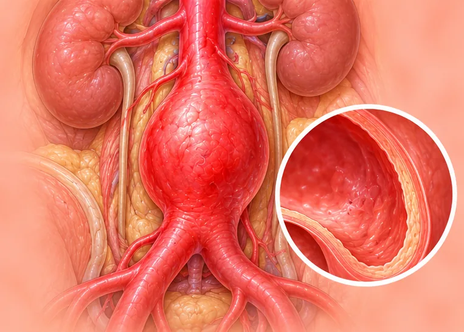

主动脉瘤
身体最大血管主动脉的管壁鼓起
这是什么
主动脉把血液从心脏送到全身。管壁薄弱处可能被撑大鼓起。通常没有症状，但破裂属于紧急情况。
- 胸部或腹部的主动脉
- 老年男性较常见
- 起初常常没有症状
- 就诊科室
- 血管外科医生、心脏科医生
- 多发人群
- 老年人、吸烟者、高血压患者
- 传染性
- 不传染
- 病程
- 可能随时间缓慢增大；医生可安排定期检查
常见表现

检查时发现影像学偶然发现 
声音沙哑声音嘶哑
其他症状
- 胸、背或腹部深处持续疼痛
- 腹部有搏动的感觉
为什么会这样

年龄增长衰老 
血糖或血压偏高代谢危险因素 
吸烟吸烟（烟草使用） 
家族遗传遗传易感性
其他原因
- 有时是外伤或感染
出现这些情况请先看医生
- 胸、腹或背部突然剧烈撕裂样疼痛：立即拨打999
- 晕倒、冒冷汗或脉搏又快又弱：拨打999
- 呼吸困难，或面部下垂、手臂无力、说话困难：拨打999
- 腹部新出现的疼痛搏动肿块
- 新出现且持续的声音沙哑或吞咽困难
如果有以上情况，请先看医生，再来做调理。
本页只是一般性的健康资讯。请继续按时服用平常的药物，并继续看医生。
请继续日常治疗
请继续按医嘱服药，并按时复诊。我们的调理是温和的辅助，不能代替医疗。
日常护理

定期看医生复查定期随访 
在家测量血压家庭血压监测 
戒烟戒烟 
避免提重物避免用力 
咨询药剂师药剂师建议
告诉理疗师
- 心脏病
- 高血压
- 服用抗凝药
- 心脏起搏器或金属植入物
调理师会在开始前和你确认这一项。
常见问题
主动脉瘤是什么？
身体最大血管主动脉的管壁鼓起。主动脉把血液从心脏送到全身。管壁薄弱处可能被撑大鼓起。通常没有症状，但破裂属于紧急情况。
主动脉瘤有哪些常见表现？
检查时发现；声音沙哑
为什么会有主动脉瘤？
年龄增长；血糖或血压偏高；吸烟；家族遗传
有主动脉瘤要怎么照顾自己？
定期看医生复查；在家测量血压；戒烟；避免提重物；咨询药剂师
AI Body Master 的调理对主动脉瘤有帮助吗？
调理是温和的无针经络养生辅助，不能治疗或治愈主动脉瘤，也不能代替药物或医生。开始前请告诉理疗师。
相关疾病
参考资料: General information based on public health sources such as Mayo Clinic, NHS, Cleveland Clinic and NCBI StatPearls.
页面更新: 2026-11-01